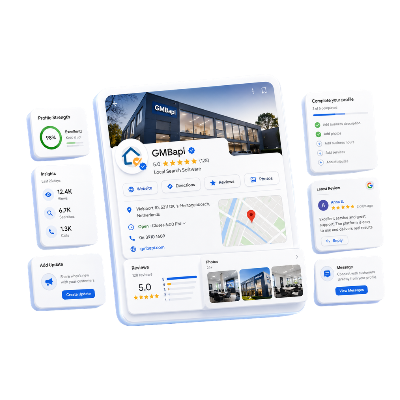
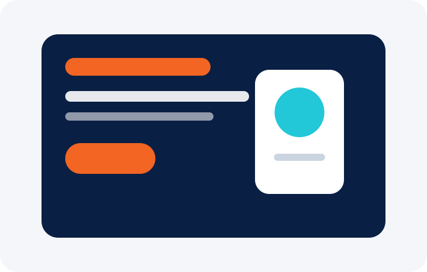
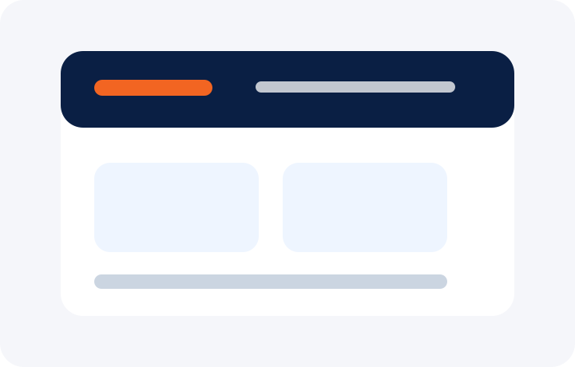
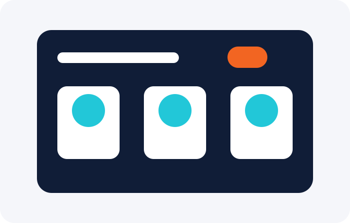
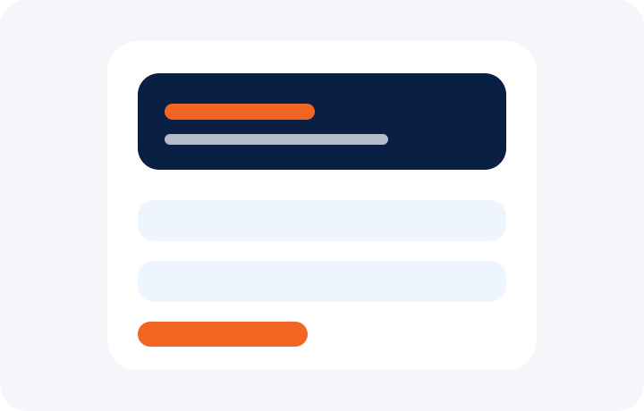
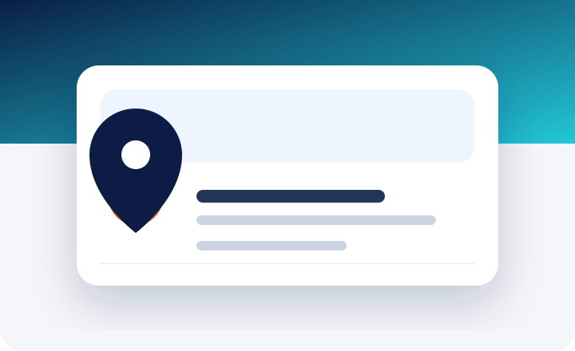
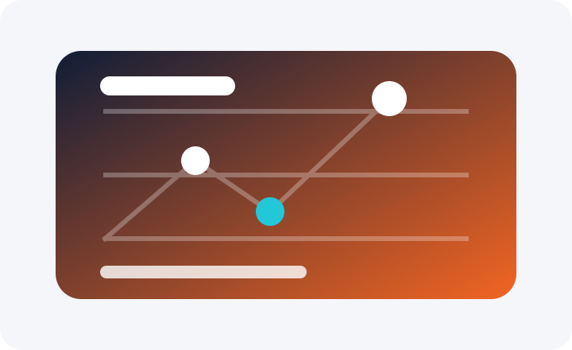
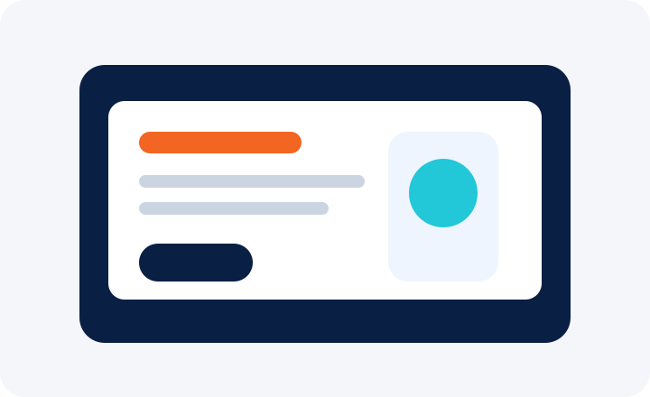

Criação de SitesSites premium, rápidos e focados em conversão pelo WhatsApp.
Marketing digital local em Vila Isabel, RJ
Agência de Marketing Digital no Rio de Janeiro para empresas que querem aparecer no Google
A Brasils Agência Digital ajuda MEIs, autônomos e prestadores de serviços a criarem uma presença digital profissional com site premium, Google Meu Negócio, SEO Local, redes sociais, tráfego pago e automação com IA.

Google Meu Negócio
Site + SEO Local
WhatsApp com IA
Google Meu NegócioPerfil otimizado para rotas, ligações, avaliações e autoridade local.
SEO LocalEstratégia por cidade, bairro e serviço para aparecer melhor no Google.
Redes SociaisConteúdo profissional para presença, confiança e relacionamento.
Tráfego PagoCampanhas no Google e Meta para atrair oportunidades qualificadas.
Automação com IAAtendimento inteligente, fluxos e organização de leads no WhatsApp.
O problema
Seu negócio pode ser bom, mas o cliente precisa encontrar você primeiro
Solução completa
Uma presença digital integrada para gerar autoridade, confiança e contatos
Unimos site profissional, SEO Local, Google Meu Negócio, redes sociais, anúncios e automação com IA em uma estratégia clara para negócios locais que querem crescer com consistência.
Receber diagnóstico
Google Meu Negócio otimizado
Site premium com foco em conversão
SEO Local por bairro e cidade
Tráfego pago no Google e Meta
Automação com IA para WhatsApp
Relatórios de performance
Serviços
Estratégias digitais para MEIs, autônomos e prestadores de serviços
Criação de Site Profissional
Sites rápidos, responsivos e otimizados para transformar visitantes em contatos pelo WhatsApp.
Google Meu Negócio
Otimização do Perfil da Empresa para aumentar visibilidade local, rotas, ligações e mensagens.
SEO Local
Estratégias para aparecer em buscas por serviço, cidade e bairro no Rio de Janeiro.
Redes Sociais
Conteúdo profissional para fortalecer autoridade, relacionamento e presença de marca.
Google Ads e Meta Ads
Campanhas para atrair pessoas com intenção de compra e acelerar oportunidades.
Automação com IA
Fluxos inteligentes para WhatsApp, respostas rápidas e organização de leads.
Landing Pages
Páginas de conversão para campanhas, ofertas, lançamentos e captação segmentada.
Consultoria Digital
Diagnóstico estratégico para organizar prioridades e criar um plano de crescimento.
Mapa local
Agência digital em Vila Isabel atendendo negócios locais no Rio de Janeiro
Criamos estratégias para empresas que desejam aparecer melhor nas buscas locais e gerar contatos em Vila Isabel, Tijuca, Grajaú, Maracanã, Saens Peña, Jacarepaguá, Recreio dos Bandeirantes, Vargem Pequena, Vargem Grande e Nova Iguaçu.
Presença local
Atendimento especializado por região
Fortalecemos a presença digital de empresas locais com estratégias personalizadas para cada bairro, aumentando a visibilidade no Google, no Google Maps e nos canais de atendimento.
Vila Isabel
Marketing digital, Google Meu Negócio e presença local para empresas da região.
Conhecer atendimentoTijuca
Estratégias digitais para negócios que desejam atrair mais clientes pelo Google.
Conhecer atendimentoGrajaú
Criação de sites, SEO local e otimização para buscas regionais.
Conhecer atendimentoMaracanã
Presença digital para empresas locais que desejam vender mais pela internet.
Conhecer atendimentoSaens Peña
Otimização de perfil no Google e campanhas para atrair clientes próximos.
Conhecer atendimentoBarra da Tijuca
Automação com IA, sites profissionais e estratégias digitais para empresas em crescimento.
Conhecer atendimento
Prova social
Avaliações reais fortalecem confiança e autoridade
Esta seção deve receber apenas avaliações reais do Perfil da Empresa no Google. Não usamos depoimentos inventados: autoridade local precisa ser comprovável.
Adicionar avaliações reais do Google
Nome, estrelas, texto original, data e serviço contratado quando disponível.
Ver avaliações no Google
Vídeo institucional
Conheça o método da Brasils Agência Digital
Método Brasils
Roteiro sugerido
Mostre o problema da baixa visibilidade, a solução integrada, o processo de criação da presença digital e o convite para diagnóstico gratuito pelo WhatsApp.
- Por que negócios locais deixam de aparecer no Google.
- Como site, Google Meu Negócio e WhatsApp trabalham juntos.
- Quais resultados o cliente pode acompanhar mês a mês.
Portfólio
Modelos de sites para presença digital profissional
Escolha uma estrutura de site de acordo com o objetivo do seu negócio: captar leads, fortalecer autoridade, vender online ou apresentar serviços em uma página objetiva.

Landing Page
Modelo para campanhas e geração de leads
Página focada em uma oferta, com copy de conversão, formulário, WhatsApp e CTA direto para orçamento.
Acessar modelo
Site Institucional
Modelo para autoridade e presença no Google
Estrutura completa com páginas de serviços, sobre a empresa, áreas atendidas, depoimentos e contato.
Acessar modelo
Loja Ecommerce
Modelo para venda de produtos online
Vitrine de produtos com categorias, destaque de ofertas, carrinho, checkout e integração com tráfego pago.
Acessar modelo
Onepage
Modelo direto para serviços e WhatsApp
Site de página única com apresentação, benefícios, serviços, FAQ, mapa e CTA para contato rápido.
Acessar modelo
Processo
Como construímos sua presença digital
- Diagnóstico inicial
- Análise do Google Meu Negócio
- Pesquisa de palavras-chave
- Criação do site
- SEO técnico e local
- Integração com Google Maps
- Automação com WhatsApp
- Monitoramento
- Relatório mensal
- Otimização contínua
FAQ AEO
Respostas diretas para clientes e mecanismos de busca
O que faz uma agência de marketing digital local?
Ajuda empresas a aparecerem melhor no Google, organizarem sua presença online e receberem contatos de clientes próximos.
A Brasils Agência Digital atende MEI?
Sim. Atendemos MEIs, autônomos e prestadores de serviços que precisam criar autoridade digital.
Google Meu Negócio ajuda a conseguir clientes?
Sim. Um perfil otimizado aumenta chances de ligações, rotas, visitas ao site e mensagens pelo WhatsApp.
Quanto tempo leva para um site aparecer no Google?
O site pode ser indexado em poucos dias, mas o ganho de relevância depende de SEO, conteúdo e otimização contínua.
A agência atende fora de Vila Isabel?
Sim. Atendemos Vila Isabel, Tijuca, Grajaú, Maracanã, Jacarepaguá, Recreio, Vargem Pequena, Vargem Grande e Nova Iguaçu.
Blog
Conteúdo para crescer autoridade digital

Google Meu Negócio
Como aparecer no Google Maps em Vila Isabel
Checklist prático para fortalecer seu Perfil da Empresa, aumentar rotas, ligações e avaliações.
Ler postagem
SEO Local
SEO Local para prestadores de serviços no Rio de Janeiro
Como organizar páginas, bairros, conteúdo e autoridade para ser encontrado por clientes próximos.
Ler postagem
Automação com IA
Como automatizar o WhatsApp sem perder atendimento humano
Fluxos inteligentes para responder rápido, qualificar leads e manter uma experiência próxima.
Ler postagem
Sites Profissionais
Por que MEIs precisam de um site além do Instagram
Entenda como um site próprio aumenta confiança, SEO, autoridade e geração de orçamento.
Ler postagem
Contato e conversão
Solicite um diagnóstico gratuito da sua presença digital
Preencha os dados e abriremos uma conversa no WhatsApp com as informações do seu negócio para agilizar o atendimento.
(21) 99002-9982